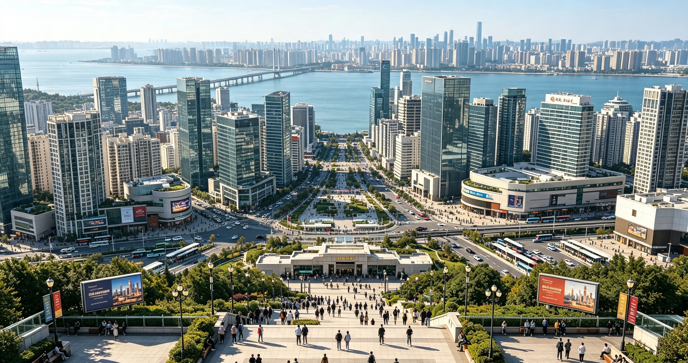

欧岛新区
Ou Island New District
市中心 · CBD
踞于中心岛之上，是欧城市当之无愧的中央商务区与城市门面。昔日的船坞货栈之地，今日玻璃幕墙的写字楼群沿江岸拔地而起，中轴广场绿意盎然，商业综合体与总部经济在此汇聚。
若说老城是欧城市的记忆，欧岛新区便是欧城市的现在与未来——繁华、高效、昼夜不息。"欧岛新区线"环行全岛，将每一座塔楼纳入轨道的脉搏。
- 方位中心岛
- 面积46 平方公里
- 人口常住 68 万
- 区治中轴广场
轨道交通
东西快线
南北连接线
欧岛新区线
市东城区线
欧区贯通线
市域轻轨